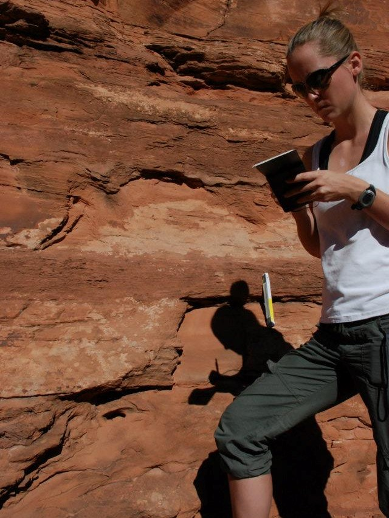

For geochemists and Earth historians alike diagenesis is often regarded as a problem to be avoided. Diagenetic processes add complexity to the geochemical signals and in the worst case can obliterate the primary environmental information. Instead of attempting to avoid diagenesis, our research seeks to extract the primary chemical information from ancient carbonate sediments by better understanding the diagenetic processes. Diagenetic reactions involve fluids in the subsurface and the amount of fluid flow determines the extent to which diagenesis alters or preserves the original geochemical signals (fluid- and sediment-buffered diagenesis). We have developed a numerical model that simulates these reactions between carbonate and pore-fluids along a flow path (Ahm et al., 2018). The model has been ground-truthed against measurements of calcium and magnesium isotopes from modern to Neogene carbonate sediments in the Bahamas. By quantifying the style and extent of early marine diagenesis (fluid- versus sediment-buffered), this model can explain much of the stratigraphic and lateral variability observed in the chemistry of Neogene shallow-water carbonate sediments and extract the chemical composition of contemporaneous seawater. When applied to ancient carbonate sediments, the model can be used to 'see through' diagenesis and more accurately reconstruct records of past seawater chemistry. Ongoing research involve integrating additional geochemical proxies into the model framework and seek to generate complementary datasets (e.g., for Li and S isotopes see Murphy et al., 2021 and Bryant et al., 2022, respectively).


The variability in carbon isotope values from Neoproterozoic platform carbonates
exceeds that of the Cenozoic deep sea record by almost an order of magnitude.
The Neoproterozoic record is characterized by high baseline values +5-10‰
that are interrupted by dramatic negative excursions with values down to -15‰.
The origins of the Neoproterozoic carbon isotope excursions are still widely debated,
because δ13C values below -5‰ can not be explained by a traditional
steady state carbon cycle model.
A continued research effort in the Earth history group is investigating the link
between the local depositional environment and diagenetic history of these Neoproterozoic
carbonates. In addition to constraining the effects from diagenesis,
we attempt to disentangle the influence of primary variabilities in local surface-waters
chemistry on stratigraphic records from platform carbonates. Local effects are
important to consider because observation from modern shallow-water depositional
systems have shown that local carbon cycling and diagenesis largely
controls the carbon isotope values of platform carbonates.
Research in the group, and with collaborators, spans several Neoproterzoic carbon
isotope excursions such as the Precambrian-Cambrian boundary, the Ediacaran Shuram
excursion, the snowball Earth cap carbonates, the Trezona excursion, the Taishir
excursion, and the Islay excursion.
Group and collaboration papers on Neoproterozoic carbon isotope excursions:

Throughout the history of our planet, Earth's surface has gone through critical transitions. Perhaps most dramatic is the evolution of oxygenic photosynthesis and the rise of atmospheric oxygen more than 2.3 billion years ago (the Great Oxidation Event). This event is expected to have caused major changes in the global carbon cycle, which may be recorded by the composition of stable carbon isotopes in carbonate rocks. However, ancient carbonate sediments deposited before the Great Oxidation Event have baseline carbon isotope values of approximately 0‰ - broadly similar to baseline values recorded in Phanerozoic! This observation challenges our understanding of how sediments record and preserve signals of the global carbon cycle. It is likely that the carbon cycle on early Earth was significantly different from the modern and included fluxes that may not exist on Earth today. Moreover, only a fraction of ancient carbonate sediments is preserved in the geologic record due to the continuous recycling of ocean crust through the forces of plate tectonics. The chemistry of sediment may also be altered during the transformation of primary sediment into rocks (diagenesis). As a result, it is possible that the chemistry of the ancient carbonate sediments is not telling us a true story of the ancient carbon cycle. Ongoing research in the Earth history group includes using calcium and magnesium isotope measurements from Archean carbonates to better understand the carbon cycle on early Earth. This project is funded by the Simons Foundation Collaboration on the Origins of Life and NSERC Discovery.
Shallow marine carbonate sediments are deposited in shallow restricted
environments where the chemistry of the surface waters are significantly offset
from the chemistry of the open ocean. As a result, it is difficult to directly
link the geochemistry of ancient platform sediments with changes in global geochemical
cycles. In the Earth history group, we explore how air-sea gas exchange of carbon
dioxide and may affect surface water chemistry and the carbon-isotopic
composition of platform carbonate sediments.
Highly variable carbon isotope DIC values in shallow-water environments
are possible due to slow rates of air-sea gas exchange, meaning that surface water
carbon isotope values can diverge from equilibrium with the overlying
atmosphere. The exchange of carbon dioxide across the air-sea interface is
associated with kinetic isotope effects, with the preferential dissolution and
degassing of 12C. Surface waters that have low DIC concentrations
with net invasion of carbon dioxide may therefore have lower carbon isotope
values compared to surface waters with high DIC concentration and net
degassing of carbon dioxide. In the modern open-ocean these kinetic effects are
relatively small. In contrast, kinetic isotope effects associated with gas exchange
can be pronounced in shallow-water hypersaline and restricted environments
(e.g., Lazar and Erez, 1992; Clark et al. 1992; Beeler et al. 2020).
In these settings, carbonate with carbon isotope values between -25 and +15‰
have been documented. We use numerical models, ground-truthed in modern observations,
to explore kinetic isotope effects associated with air-sea gas exchange of carbon
dioxide and explore the potential role of kinetic isotopes effect in ancient
platform sediments.


The concentration of reactive Fe in sedimentary rocks is extremely sensitive to modern weathering processes. Understanding the record of redox sensitive elements in ancient sediments is fundamental for extracting records of the concentration of atmospheric oxygen through Earth history. By using trace element analysis of samples from a shallow drill-core and coincident outcrop from Vinini Creek (Central Nevada), we found that in core samples there is abundant iron bound to pyrite and siderite minerals. In contrast, in outcrop samples much of that iron had been remobilized and transformed into iron oxides. This work emphasizes the limitations for using measurements of the concentration of pyrite and iron oxide in rocks collected from outcrop to infer past changes in oxygen levels (the iron speciation proxy) and highlights the need for more robust methods to evaluate the degree of alteration and diagenesis in ancient sediments.